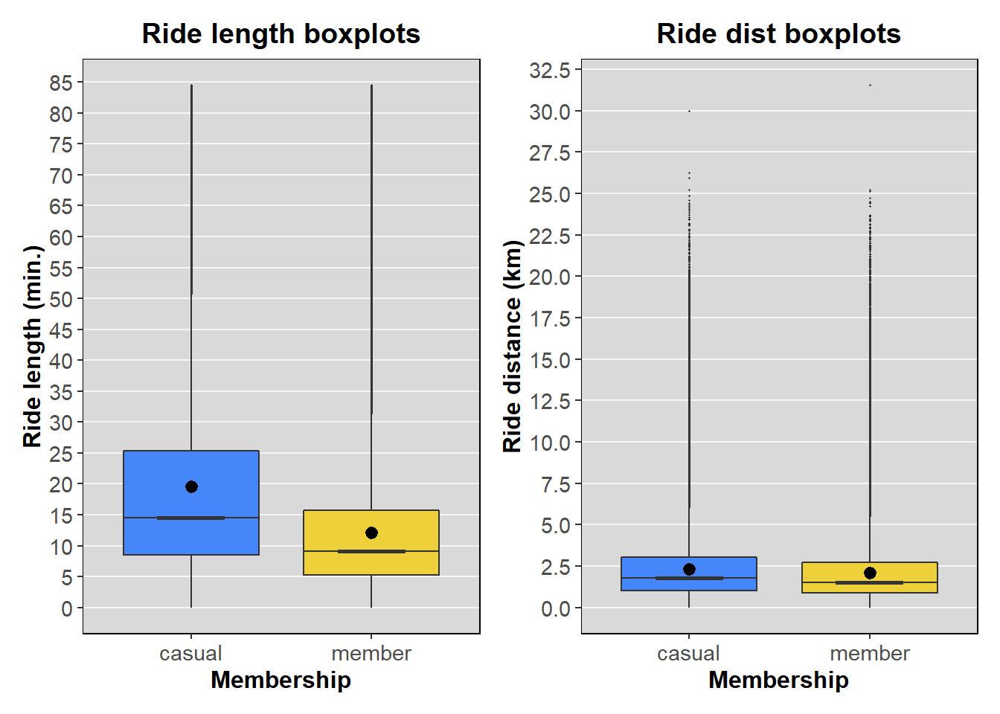
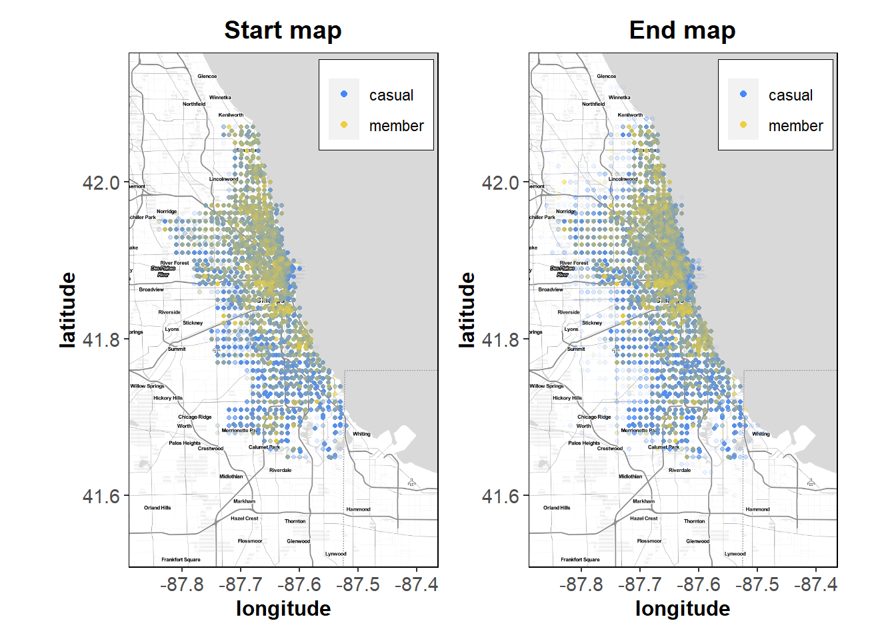

library(data.table)
library(lubridate)
library(geosphere)
library(rstatix)
library(robustbase)
library(ggplot2)
library(ggmap)
library(viridisLite)
library(patchwork)Introduction
In this case study we will perform real-world tasks of a junior data analyst, working for a fictional bike sharing company, called Cyclistic. This case study is taken from Google data analytics professional certificate on Coursera.
Cyclistic’s director of marketing believes the company’s future success depends on maximizing the number of annual memberships. Therefore our (fictional) team wants to understand how casual riders and annual members differ. The final goal is to design a new marketing strategy to convert casuals into members, and more specifically, we need to answer two questions:
- How Cyclistic can increase its revenue based on the available data?
- How the marketing team can use social media to help with maximizing the number of members?
But first the marketing team recommendations must be backed up with compelling data insights and visualizations, in order to get approved by the management.
Packages
Here is the list of packages we’ll use throughout this case study.
- data.table: Fast data manipulation.
- lubridate: Datetime tools.
- geosphere: Spherical trigonometry for spatial applications.
- rstatix: Framework for basic statistical tests.
- robustbase: Basic robust statistics.
- ggplot2: Data visualization.
- ggmap: Spatial visualizations with for ggplot2 users.
- viridisLite: Colorblind friendly color palettes.
- patchwork: Easy plot composition for ggplot2 users.
We start by loading these packages.
Dataset
The relevant historical bike trip data can be downloaded from this url (see license agreement). Here we use data ranging from June 2021 to May 2022 (archives from “202106-divvy-tripdata.zip” to “202205-divvy-tripdata.zip” included)
Each archive contains a single monthly dataset, where each observation represents a unique bike ride. Each dataset has 13 columns/variables:
- ride_id: alphanumeric id for each ride.
- rideable_type: Bike type. Categorical variable with 3 levels: “classic_bike”, “docked_bike”, “electric_bike”.
- member_casual: Customer type. Categorical variable with 2 levels: “casual”, “member”.
- started_at: Ride start datetime.
- ended_at: Ride end datetime.
- start_station_name: Name of the start station.
- start_station_id: Alphanumeric id for start station.
- end_station_name: Name of the end station.
- end_station_id: Alphanumeric id for end station.
- start_lat: Start latitude coordinate.
- start_lng: Start longitude coordinate.
- end_lat: End latitude coordinate.
- end_lng: End longitude coordinate.
Data scraping and manipulation
As first step, we scrape the datasets, merge them into a total dataset, and do some manipulation. In particular we add some additional columns, computed from the existing ones:
- ride_length: Ride length in seconds (‘ended_at’ - ‘started_at’).
- year_month: Year and month value extracted from ‘started_at’ variable.
- weekday: Day of week extracted from ‘started_at’ variable.
- ride_dist: Mileage in meters. Computed from latitude and longitude values.
Then we convert ‘year_month’ and ‘member_casual’ variables into factor datatype, and ‘year_month’ into ordered factor. To accomplish these tasks we use 3 custom functions.
Custom scraping and manipulation functions
add.cols <- function(dt) {
if(!("data.table" %in% class(dt))) stop("dt is not a data.table object.")
if(Sys.getlocale("LC_TIME") != "English_United States.1252") Sys.setlocale("LC_TIME", "English")
year_month <- format(dt$started_at, "%b %Y")
weekday <- lubridate::wday(dt$started_at, label = T, abbr = T, week_start = 1)
ride_length <- as.numeric(dt$ended_at - dt$started_at)
ride_dist = geosphere::distGeo(p1 = dt[, c("start_lng", "start_lat"), with = F],
p2 = dt[, c("end_lng", "end_lat"), with = F])
return(cbind(dt, year_month, weekday, ride_length, ride_dist))
}
change.datatypes <- function(dt) {
if(!("data.table" %in% class(dt))) stop("dt is not a data.table object.")
dt[, c("rideable_type", "member_casual")] <- lapply(
dt[, c("rideable_type", "member_casual")],
as.factor
)
dt[["year_month"]] <- ordered(dt[["year_month"]], levels = unique(dt$year_month))
return(dt)
}
get.raw_data <- function(Url, Timeout = 60) { ## increase timeout if you get timeout error
mm <- c("202106", "202107", "202108", "202109", "202110", "202111", "202112", "202201",
"202202", "202203", "202204", "202205")
url1 <- Url
urls <- lapply(url1, paste, mm, "-divvy-tripdata.zip", sep = "")[[1]]
ls <- vector(mode = "list", length = length(mm))
names(ls) <- paste(mm, "-divvy-tripdata.csv", sep = "")
options(timeout = Timeout)
for (i in 1:length(ls)) {
ls[[i]] <- tempfile(fileext = ".zip")
download.file(urls[i], ls[[i]])
ls[[i]] <- unzip(ls[[i]], names(ls)[i], exdir = tempdir()) |>
data.table::fread(na.strings = c("", NA))
}
options(timeout = 60)
raw.tot_data <- data.table::rbindlist(ls) |> add.cols() |> change.datatypes() |>
data.table::setcolorder(c(1,2,13,3,4,16,14,15,5:12,17)) |>
data.table::setkey(ride_id)
invisible(gc(reset = T))
return(raw.tot_data)
}We call the resulting dataset ‘raw.tot_data’.
url <- "https://divvy-tripdata.s3.amazonaws.com/"
raw.tot_data <- get.raw_data(url, Timeout = 5000)
Note:
The datasets are quite large (more then 5 million obs. total). If you wish to reproduce this analysis keep in mind it might take much time, even more than 1 hour with non recent hardware.
Data cleansing
As next step we do some data cleansing. We must deal with missing and bad values, which the raw dataset has plenty of.
cbind(miss_val = lapply(raw.tot_data, is.na) |> lapply(sum)) miss_val
ride_id 0
rideable_type 0
member_casual 0
started_at 0
ended_at 0
ride_length 0
year_month 0
weekday 0
start_station_name 823167
start_station_id 823164
end_station_name 878338
end_station_id 878338
start_lat 0
start_lng 0
end_lat 5036
end_lng 5036
ride_dist 5036 We use two additional custom functions to accomplish this task.
Custom cleansing functions
rm.outliers <- function(data) {
if(!("data.table" %in% class(data))) stop("dt is not a data.table object.")
rl.upp_whisk <- robustbase::adjboxStats(data[ride_length > 0, ride_length])$stats[5]
df <- data[-which(ride_length < 0 | ride_length > rl.upp_whisk
| (ride_dist == 0 & start_station_name != end_station_name)
| (ride_dist != 0 & start_station_name == end_station_name)
| ride_dist %in% data[order(-ride_dist), head(.SD, 2)]$ride_dist)]
return(df)
}
rm.missing <- function(data) {
if(!("data.table" %in% class(data))) stop("dt is not a data.table object.")
df <- data[, grep("*station", names(data)) := NULL]
df <- df[complete.cases(df)]
return(df)
}This is what the two functions do:
- Drop obs. with ‘ride_length’ < 0, since negative times don’t make sense.
- Drop obs. with ‘ride_length’ > extreme of upper whisker of its boxplot adjusted for skewed distributions (see
robustbase::adjboxStats()documentation). - Drop obs. with ‘ride_dist’ = 0, and ‘start_station_name’ != ‘end_station_name’, since null distance only makes sense when start station and end station are the same.
- Drop obs. with ‘ride_dist’ != 0, and ‘start_station_name’ = ‘end_station_name’.
- Drop the two highest ‘ride_dist’ values, since max value is physically impossible, and the second highest one, while it might make sense in theory, is also an extremely far outlier compared to other values.
- Drop station IDs and names variables, since they have many non imputable values, and we won’t use those variables in the following analysis.
- Drop rows with missing ‘end_lat’, ‘end_lng’ and ‘ride_dist’ values.
Warning!
Arbitrarily removing observations from datasets is bad practice in real case scenarios, and might lead to strongly biased results. Always confront with your team and project stakeholders before removing any observation. However this is only a fictional case study, and this is the best we can do here.
We now run the two custom functions, and assign the output to ‘tot_data’. This is the final dataset we’ll use throughout the rest of the analysis. It has 5.673.722 rows and 13 columns.
tot_data <- raw.tot_data |> rm.outliers() |> rm.missing()
str(tot_data)Classes 'data.table' and 'data.frame': 5673721 obs. of 13 variables:
$ ride_id : chr "00000123F60251E6" "000002EBE159AE82" "0000080D43BAA9E4" "00000B4F1F71F9C2" ...
$ rideable_type: Factor w/ 3 levels "classic_bike",..: 1 3 1 3 3 1 3 1 1 3 ...
$ member_casual: Factor w/ 2 levels "casual","member": 2 2 1 2 2 2 2 2 1 2 ...
$ started_at : POSIXct, format: "2022-02-07 15:47:40" "2021-06-22 17:25:15" ...
$ ended_at : POSIXct, format: "2022-02-07 15:49:28" "2021-06-22 17:31:34" ...
$ ride_length : num 108 379 2758 376 668 ...
$ year_month : Ord.factor w/ 12 levels "Jun 2021"<"Jul 2021"<..: 9 1 3 4 12 5 11 3 2 6 ...
$ weekday : Ord.factor w/ 7 levels "Mon"<"Tue"<"Wed"<..: 1 2 7 3 4 7 1 5 3 2 ...
$ start_lat : num 41.9 41.9 41.9 41.9 41.9 ...
$ start_lng : num -87.6 -87.6 -87.6 -87.7 -87.6 ...
$ end_lat : num 41.9 41.9 41.9 41.9 41.9 ...
$ end_lng : num -87.6 -87.6 -87.6 -87.7 -87.6 ...
$ ride_dist : num 361 1581 467 830 2441 ...
- attr(*, ".internal.selfref")=<externalptr>
- attr(*, "sorted")= chr "ride_id"Explorative analysis
Next step is a brief exploratory analysis. We start by looking at ‘ride_length’ and ‘ride_dist’ distributions, with boxplots grouped by ‘member_casual’ variable, being the main variable of interest for this case study. Again, we use a custom function to draw the boxplots, and we apply a custom ggplot2 theme.
Custom boxplot function
box_plot <- function(data, x, y, mult=1, Fill = "thistle2", outl.size = 0.2, Notch = F, Coef = 1.5,
stat = "mean", Breaks = waiver(), Title = "Title", Subtitle = waiver(),
x.lab = "x-axis label", y.lab = "y-axis label") {
x = parse(text = x)
y = parse(text = y)
box <- ggplot2::ggplot(data, aes(x = eval(x), y = eval(y)*mult)) +
geom_boxplot(outlier.size = outl.size, fill = Fill, notch = Notch, coef = Coef) +
stat_summary(fun = stat) +
scale_y_continuous(breaks = Breaks) +
ggtitle(Title, Subtitle) +
xlab(x.lab) +
ylab(y.lab)
return(box)
}Custom ggplot2 theme
theme_update(
axis.text = element_text(size = 11),
legend.background = element_blank(),
panel.background = element_rect(fill = "grey85"),
panel.border = element_rect(colour = "black", fill = NA),
panel.grid = element_line(colour = "whitesmoke"),
panel.grid.minor.y = element_blank(),
panel.grid.major.x = element_blank(),
plot.title = element_text(hjust = 0.5),
plot.subtitle = element_text(face = "italic", hjust = 0.5),
strip.background = element_rect(colour = "black", fill = "grey85"),
strip.text = element_text(size = 10, face = "bold"),
title = element_text(size = 12, face = "bold")
)Below you can see the resulting plots:
rl_box <- box_plot(tot_data, "member_casual", "ride_length", mult = 1/60,
Fill = viridisLite::turbo(25)[c(5,16)], Notch = T, Breaks = seq(0,90,5),
Title = "Ride length boxplots", x.lab = "Membership",
y.lab = "Ride length (min.)")
rd_box <- box_plot(tot_data, "member_casual", "ride_dist", mult = 1/1000,
Fill = viridisLite::turbo(25)[c(5,16)], Notch = T, Breaks = seq(0,35,2.5),
Title = "Ride dist boxplots", x.lab = "Membership",
y.lab = "Ride distance (km)")
rl_box + rd_box # patchwork composition
All the four distributions are heavily right skewed, with mean (black dot) > median, long upper whiskers and many outliers on the upper side.
Looking at ‘ride_length’ plot, we notice casuals group has higher variance than members one, since casuals box is wider. Also, all casuals boxplot statistics have higher values than their members counterparts. Hence it seems like casual customers have a tendency to take longer rides, and more diverse use cases for Cyclistic’s bikes. Conversely, the two ‘ride_dist’ boxplots look very similar, suggesting the two groups cover the same distance on average. Additional more formal analysis is required here in order to draw conclusions. This preliminar graphical analysis suggests members are more likely to use Cyclistic’s bikes for daily routine tasks, like commuting to work, compared to casual customers who occasionally rent them for leisure. Moreover, from the boxplots results, it’s clear that the current Cyclistic strategy doesn’t profit from ‘ride_length’, since members, being the most profitable group, take shorter rides.
As next step we compute some summary statistics for ‘ride_length’ and ‘rideable_type’ variables. We’ll use them later to draw additional visualizations. Again we write a custom function to do it, in order to save keystrokes.
Custom summary function
Summ <- function(data, var, group_by, order_by = group_by) {
if(!("data.table" %in% class(data))) stop("dt is not a data.table object.")
x = parse(text = var)
summ = data[
,
.(obs = NROW(eval(x)), quart1 = quantile(eval(x), 0.25), mean = mean(eval(x)),
median = median(eval(x)), quart3 = quantile(eval(x), 0.75), iqr = IQR(eval(x)),
stdev = sd(eval(x))),
by = group_by
] |> data.table::setorderv(cols = order_by)
return(summ)
}rl_summ_by_ym <- Summ(tot_data, "ride_length", c("member_casual", "year_month"))
rl_summ_by_wd <- Summ(tot_data, "ride_length", c("member_casual", "weekday"))
rt_summ <- tot_data[, .(obs = .N), by = c("member_casual", "rideable_type")]rl_summ_by_ym member_casual year_month obs quart1 mean median quart3 iqr
1: casual Jun 2021 343553 576.0 1283.0834 979 1673 1097.0
2: casual Jul 2021 413932 561.0 1245.7968 950 1619 1058.0
3: casual Aug 2021 388833 545.0 1213.8663 921 1575 1030.0
4: casual Sep 2021 344914 522.0 1178.2975 883 1525 1003.0
5: casual Oct 2021 244740 468.0 1078.4636 793 1389 921.0
6: casual Nov 2021 102833 395.0 918.5119 660 1162 767.0
7: casual Dec 2021 67023 387.5 892.8884 643 1132 744.5
8: casual Jan 2022 17810 363.0 805.6264 590 1008 645.0
9: casual Feb 2022 20405 387.0 880.3110 632 1110 723.0
10: casual Mar 2022 84746 460.0 1127.8093 816 1489 1029.0
11: casual Apr 2022 119640 452.0 1099.3256 795 1439 987.0
12: casual May 2022 262577 501.0 1185.9838 875 1550 1049.0
13: member Jun 2021 354758 373.0 817.9696 636 1075 702.0
14: member Jul 2021 376543 365.0 802.9104 625 1052 687.0
15: member Aug 2021 387775 357.0 793.4779 608 1037 680.0
16: member Sep 2021 388197 343.0 770.8177 587 1002 659.0
17: member Oct 2021 369407 307.0 698.4691 519 893 586.0
18: member Nov 2021 249856 277.0 629.5316 461 787 510.0
19: member Dec 2021 175515 275.0 620.9361 457 782 507.0
20: member Jan 2022 84244 279.0 608.3621 448 753 474.0
21: member Feb 2022 93157 275.0 616.9100 451 766 491.0
22: member Mar 2022 191845 284.0 662.8775 482 839 555.0
23: member Apr 2022 241999 277.0 651.5632 474 826 549.0
24: member May 2022 349419 322.0 755.8451 564 983 661.0
member_casual year_month obs quart1 mean median quart3 iqr
stdev
1: 1003.7459
2: 978.9981
3: 961.0095
4: 949.0889
5: 898.0429
6: 798.8552
7: 773.8583
8: 701.4893
9: 774.1430
10: 956.9421
11: 936.7498
12: 985.0330
13: 636.7139
14: 630.3621
15: 632.8731
16: 620.8099
17: 585.3930
18: 540.6631
19: 528.8499
20: 519.2169
21: 537.1952
22: 575.2290
23: 568.6321
24: 632.8844
stdevrl_summ_by_wd member_casual weekday obs quart1 mean median quart3 iqr
1: casual Mon 282856 495 1178.6815 865 1546.00 1051.00
2: casual Tue 272242 462 1066.9628 780 1360.00 898.00
3: casual Wed 272028 464 1057.6846 780 1350.00 886.00
4: casual Thu 293717 468 1061.7332 783 1352.00 884.00
5: casual Fri 342166 491 1119.2363 833 1445.75 954.75
6: casual Sat 511457 570 1270.2624 976 1667.00 1097.00
7: casual Sun 436540 574 1300.8242 996 1710.00 1136.00
8: member Mon 460809 308 708.8109 525 910.00 602.00
9: member Tue 519256 308 690.7078 520 887.00 579.00
10: member Wed 507258 312 697.7463 528 897.00 585.00
11: member Thu 496600 312 699.4487 528 901.00 589.00
12: member Fri 454393 315 713.9517 537 921.00 606.00
13: member Sat 435214 349 811.2369 614 1063.00 714.00
14: member Sun 389185 342 815.4492 607 1074.00 732.00
stdev
1: 977.6261
2: 901.7131
3: 884.0924
4: 886.1289
5: 918.3581
6: 989.3016
7: 1018.5658
8: 595.1113
9: 565.8532
10: 569.0408
11: 572.8629
12: 588.8620
13: 665.4548
14: 681.0527rt_summ member_casual rideable_type obs
1: member classic_bike 1974193
2: member electric_bike 1288522
3: casual classic_bike 1182884
4: casual docked_bike 235153
5: casual electric_bike 992969As final step of our exploratory data analysis, we perform Welch’s t-tests on ‘ride_length’ and ‘ride_dist’ variables means, with ‘member_casual’ being the grouping factor. We also compute Cohen’s D estimates to see the actual effect size of ‘member_casual’ on the other two variables.
Note:
Since we have a very large dataset, Welch’s tests will almost certainly reject the null hypothesis of equal population means for member and casual customers. That’s why we also estimate the actual effect sizes of ‘member_casual’ variable with Cohen’s d statistics.
welch_rl <- t.test(ride_length ~ member_casual, data = tot_data)
welch_rd <- t.test(ride_dist ~ member_casual, data = tot_data)welch_rl
Welch Two Sample t-test
data: ride_length by member_casual
t = 630.05, df = 3806121, p-value < 2.2e-16
alternative hypothesis: true difference in means between group casual and group member is not equal to 0
95 percent confidence interval:
440.0178 442.7640
sample estimates:
mean in group casual mean in group member
1171.2742 729.8833 welch_rd
Welch Two Sample t-test
data: ride_dist by member_casual
t = 123.77, df = 5074284, p-value < 2.2e-16
alternative hypothesis: true difference in means between group casual and group member is not equal to 0
95 percent confidence interval:
199.2456 205.6576
sample estimates:
mean in group casual mean in group member
2303.351 2100.899 As expected, both tests reject the null hypothesis of equal population means. So let’s see how strong the relationships between ‘member_casuals’, and ‘ride_dist’ and ‘ride_length’ variables actually are. Relying on the two boxplots, we can assume a moderate to high effect size on ‘ride_length’ variable, and a small effect size on ‘ride_dist’ variable.
cohensD_rl <- rstatix::cohens_d(ride_length ~ member_casual, data = tot_data)
cohensD_rd <- rstatix::cohens_d(ride_dist ~ member_casual, data = tot_data)cohensD_rl# A tibble: 1 x 7
.y. group1 group2 effsize n1 n2 magnitude
* <chr> <chr> <chr> <dbl> <int> <int> <ord>
1 ride_length casual member 0.552 2411006 3262715 moderate cohensD_rd# A tibble: 1 x 7
.y. group1 group2 effsize n1 n2 magnitude
* <chr> <chr> <chr> <dbl> <int> <int> <ord>
1 ride_dist casual member 0.105 2411006 3262715 negligibleAs expected, our assumptions about effect sizes turned out correct. ‘member_casual’ has a moderate effect size on ‘ride_length’ variable, and a negligible effect on ‘ride_dist’. That’s more evidence supporting our previous findings about the two types of customers: casuals tend to take significantly longer rides and are more likely to use Cyclistic bikes for leisure.
Visualizations
Last step of our analysis consists of some additional visualizations about the total number of rides, and some maps.
Custom visualiz. functions
col_plot <- function(data, x, y, group, mult = 1, Legend = F, text_vjust = 0, text_col = "black",
text_fface = "bold", text.size = 2.5, facet_nrow = 2, facet_strip = "right",
Breaks = waiver(), col_man = rep("black", facet_nrow),
Fill_man = rep("thistle2", facet_nrow), Title = "Title", Subtitle = waiver(),
x.lab = "x-axis label", y.lab = "y-axis label", Round = 2, Angle = 0) {
x = parse(text = x)
y = parse(text = y)
group = parse(text = group)
col <- ggplot2::ggplot(data, aes(x = eval(x), y = eval(y)*mult)) +
geom_col(aes(color = eval(group), fill = eval(group)), show.legend = Legend) +
geom_text(aes(label = round(eval(y)*mult, Round)),
vjust = text_vjust,
colour = text_col,
fontface = text_fface,
size = text.size) +
facet_wrap(~eval(group), nrow = facet_nrow, strip.position = facet_strip) +
scale_y_continuous(breaks = Breaks) +
scale_color_manual(values = col_man) +
scale_fill_manual(values = Fill_man) +
theme(axis.text.x = element_text(angle = Angle)) +
ggtitle(Title, Subtitle) +
xlab(x.lab) +
ylab(y.lab)
return(col)
}
map_plot <- function(data, lng, lat, group, Zoom = 11, Crop = F, Type = "toner-lite", transp = 0.05,
dot.size = 0.85, col_man = "black", fill_man = "black", x.lab = "longitude",
y.lab = "latitude", Title = "map") {
lng = parse(text = lng)
lat = parse(text = lat)
group = parse(text = group)
map.lim = c(min(data[, eval(lng)]), min(data[, eval(lat)]),
max(data[, eval(lng)]), max(data[, eval(lat)]))
map = get_stamenmap(bbox = map.lim, zoom = Zoom, maptype = Type, crop = Crop)
map.plot <- ggmap::ggmap(map) +
geom_point(data = data,
aes(x = eval(lng), y = eval(lat), fill = eval(group), colour = eval(group)),
alpha = transp, size = dot.size) +
scale_color_manual(values = col_man) +
scale_fill_manual(values = fill_man) +
guides(colour = guide_legend(override.aes = list(alpha = 1, size = 1.5))) +
theme(legend.title = element_blank(), legend.position = c(0.80, 0.90),
legend.background = element_rect(colour = "black", size = 0.1)) +
xlab(x.lab) +
ylab(y.lab) +
ggtitle(label = Title)
return(map.plot)
}Below you can look at column plots for number of rides by month and by day of week, both grouped by ‘member_casual’.
nr.ym <- col_plot(rl_summ_by_ym, "year_month", "obs", "member_casual", mult = 1/1000,
text_vjust = 1.2, Breaks = seq(0, 500, 50), Title = "Num. rides by month",
Fill_man = viridisLite::turbo(25)[c(5,16)], x.lab = "Month",
y.lab = "Num. rides (thousands)", Round = 0, Angle = 90)
nr.wd <- col_plot(rl_summ_by_wd, "weekday", "obs", "member_casual", mult = 1/1000,
text_vjust = 5, Breaks = seq(0, 500, 50), Title = "Num. rides by weekday",
Fill_man = viridisLite::turbo(25)[c(5,16)], x.lab = "Weekday",
y.lab = "Num. rides (thousands)", Round = 0)
nr.ym + nr.wd #patchwork composition
These plots are quite interesting. The first one shows an obvious decline of the number of rides in cold seasons, for both casual and member customers, but the decline is steeper for casual riders. The second plot shows plain different trends in the number of rides by day of week: casuals do ride more during the weekend, while members have an opposite trend, with maximum number of rides during mid-week, and a decline towards the weekend. Those are pretty strong evidences that annual members mostly use Cyclistic bike sharing service to commute to work, while casuals rent bikes for leisure, mainly.
With the following column plot we also take a look at customers preferences about bike types.
nr.rt <- ggplot(rt_summ, aes(x = rideable_type, y = obs/1000)) +
geom_col(aes(fill = member_casual), position = "dodge", colour = "black") +
geom_text(
aes(group = member_casual, label = round(obs/1000)),
position = position_dodge2(width = 1),
vjust = 2, fontface = "bold"
) +
scale_fill_manual(values = viridisLite::turbo(25)[c(5,16)]) +
theme(legend.position = c(.85, .85), legend.title = element_blank()) +
ylab("Num. rides (thousands)") +
xlab("Bike type") +
ggtitle("Num. rides by bike type")
nr.rt
As we can see, docked bikes ar by far the least popular category, and more important, those are only used by casual customers. It makes sense in accordance to previous findings, that annual members prefer the flexibility of non-docked bikes when commuting to work.
In the end, we draw two maps paired with scatterplots of start and end coordinates.
start_map <- map_plot(tot_data, "start_lng", "start_lat", "member_casual",
col_man = viridisLite::turbo(25)[c(5,16)],
fill_man = viridisLite::turbo(25)[c(5,16)], Title = "Start map")
end_map <- map_plot(tot_data, "end_lng", "end_lat", "member_casual",
col_man = viridisLite::turbo(25)[c(5,16)],
fill_man = viridisLite::turbo(25)[c(5,16)], Title = "End map")
start_map + end_map #patchwork composition
The two maps clearly show that member customers are Chicago locals mainly, while casuals are more dispersed and more likely to be tourists.
Findings and suggestions
Based on the previous analysis we can conclude that:
- Most member customers are Chicago locals and use Cyclistic bikes for daily routine activities, especially to commute to work.
- Casual customers are more dispersed, use Cyclistic bikes for leisure, and are more likely to be tourists.
Being the two groups fundamentally different between each other, it might be hard to convert casuals into members. However we can provide some potentially useful suggestions anyway:
- Gather more data on casual riders with surveys. Ask about their home addresses, daily habits, work, etc.
- Develop a dedicated social media campaign targeted at casual customers on weekends, specifically. A clever and low-cost idea might be asking the customers to share their weekend rides with Cyclistic on social media (in exchange for some discounts, etc.).
- Adopt a more flexible pricing structure, by offering something like a weekend-only membership. Also develop a plan to charge casual customers based on ‘ride_length’.
- Consider cutting investments on docked bikes, and focus on non-docked ones.
- Consider an expansion to Chicago neighborhoods.
- Consider partnerships with local enterprises, like offering discounted memberships for employees.
Source code
For a different take on this same case study, look at the source code I uploaded to github, where I also used renv for dependency management, and targets for workflow management. Follow the instructions in order to reproduce the analysis.